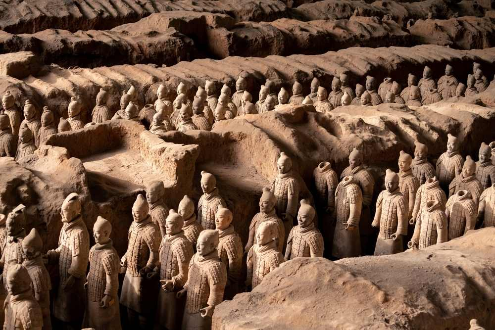
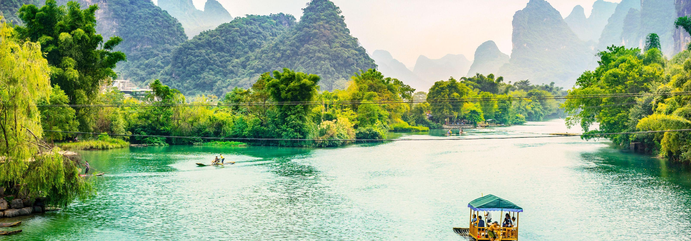
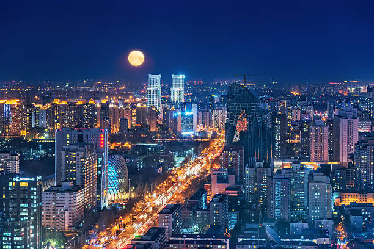
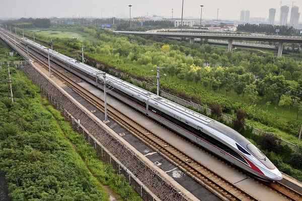

📸 China Gallery

Great Wall

Forbidden City

Terracotta Army

Li River, Guilin

Zhangjiajie

Potala Palace, Lhasa

Beijing at Night

Spanning diverse landscapes from the Great Wall and Forbidden City to dramatic karst rivers and high plateaus, China is a vast country with millennia of history, culture, and natural beauty.
Whether you want historic temples, bustling megacities, tranquil countryside, or Himalayan highlands, China offers unforgettable experiences for travellers.
China, officially the People's Republic of China (PRC), is a country in East Asia. With a population exceeding 1.4 billion, it is the second-most populous country after India, representing 17.4% of the world population. China is vast; it borders fourteen countries by land across an area of nearly 9.6 million square kilometers (3,700,000 sq mi), making it the third-largest country by land area.[k] The country is divided into 33 province-level divisions: 22 provinces,[l] 5 autonomous regions, 4 municipalities, and 2 semi-autonomous special administrative regions. Beijing is the country's capital, while Shanghai is its most populous city by urban area and largest financial center.
Considered one of six cradles of civilization, China saw the first human inhabitants in the region arriving during the Paleolithic. By the late 2nd millennium BCE, the earliest dynastic states had emerged in the Yellow River basin. The 8th–3rd centuries BCE saw a breakdown in the authority of the Zhou dynasty, accompanied by the emergence of administrative and military techniques, literature, philosophy, and historiography. In 221 BCE, China was unified under an emperor, ushering in more than two millennia of imperial dynasties including the Qin, Han, Tang, Yuan, Ming, and Qing. With the invention of gunpowder and paper, the establishment of the Silk Road, and the building of the Great Wall, Chinese culture flourished and has heavily influenced both its neighbors and lands further afield. However, China began to cede parts of the country in the late 19th century to various European powers by a series of unequal treaties. After decades of Qing China on the decline, the 1911 Revolution overthrew the Qing dynasty and the monarchy and the Republic of China (ROC) was established the following year.
The country under the nascent Beiyang government was unstable and ultimately fragmented during the Warlord Era, which was ended upon the Northern Expedition conducted by the Kuomintang (KMT) to reunify the country. The Chinese Civil War began in 1927, when KMT forces purged members of the rival Chinese Communist Party (CCP), who proceeded to engage in sporadic fighting against the KMT-led Nationalist government. Following the country's invasion by the Empire of Japan in 1937, the CCP – under the leadership of Mao Zedong – and KMT formed the Second United Front to fight the Japanese. The Second Sino-Japanese War eventually ended in a Chinese victory; however, the CCP and the KMT resumed their civil war as soon as the war ended.
In 1949, the resurgent Communists established control over most of the country, proclaiming the People's Republic of China and forcing the Nationalist government to retreat to the island of Taiwan. The country was split, with both sides claiming to be the sole legitimate government of China. Following the implementation of land reforms, further attempts by the PRC to realize communism failed: the Great Leap Forward was largely responsible for the Great Chinese Famine that ended with millions of Chinese people having died, and the subsequent Cultural Revolution was a period of social turmoil and persecution characterized by Maoist populism. Following the Sino-Soviet split, the Shanghai Communiqué in 1972 would precipitate the normalization of relations with the United States. Economic reforms that began in 1978 moved the country away from a socialist planned economy towards a market-based economy, spurring significant economic growth. A movement for increased democracy and liberalization stalled after the Tiananmen Square protests and massacre in 1989.